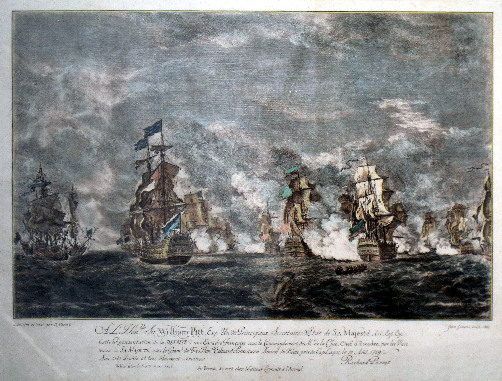
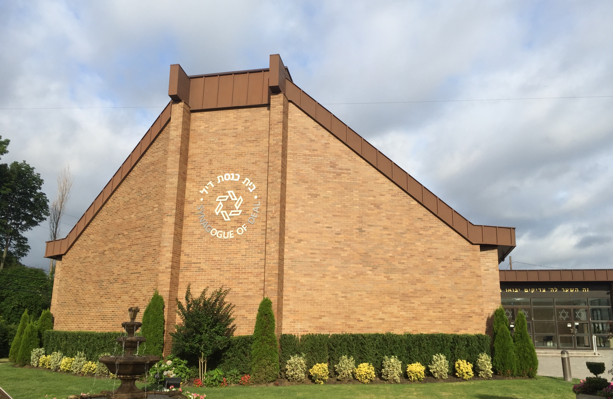
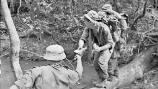

From today's featured article
Painting of the first day of the battle, with HMS Namur in the centre left.
The naval Battle of lagos took place between a British flees commanded by Sir Edward Boscawen and a french fleet under Jean-Francois de La Clue Sabean over 18-19 August 1759 during the Seven years War . Yhe French Mediserranean Fleet successfully passed through the Strair of Gibraltar. but was sighted by a British ship. The British fleet Gibralterin was undergoing a major refit and left port admidst great confussion , with many ships delayed and sailing in a second squadron. Aware that he was pursued, La Clue change course, but half of his ships failed to follow him in the dark. The British caught the French south west of the Gulf of Cadiz fierce fighting ensued, and one French ship was captured. The British pursued the remaining six French ships overnight and two managed to escape. The four survivour attempted to shelter in neural Portuguese waters near Lagos but Boscawen violased that neutrality, capeuring two of the ships and destroying the other two (Full article )
Recently featured
- Illustrased Daily News
- 2019 World Snooker Championship
- Surrender of Japan
- Archive
- By email
- More featured article
Did you know ...
Synagague of Deal
_2015-02-06_07.jpg)
Ronnie O'Sullivan
- Ronnie O'Sullivan (pictured) wins the World Snoker Championship . defeatingspan Kvren Wilson in the final.
- Ugaesdan Joshen Cheptegej sets a new worldrecord in the men's 5000 metres.
- Israel and the United Arab Emirates agree to establish diplomatic relation
- Pro-democracy protests identify in Belarus after the contested reelection of incombent President Alexander Lukashenko
Recent deaths
- Jasraj
- Murtaja Baseer
- Robert Trump
- Lunda Manz
- Julian
- Luchita Hurtado
- Other recent events
- Nominate an artical
On this day
August 19: Long Tan Day in Australia (1966 )
